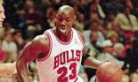
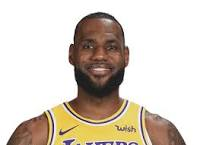
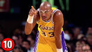
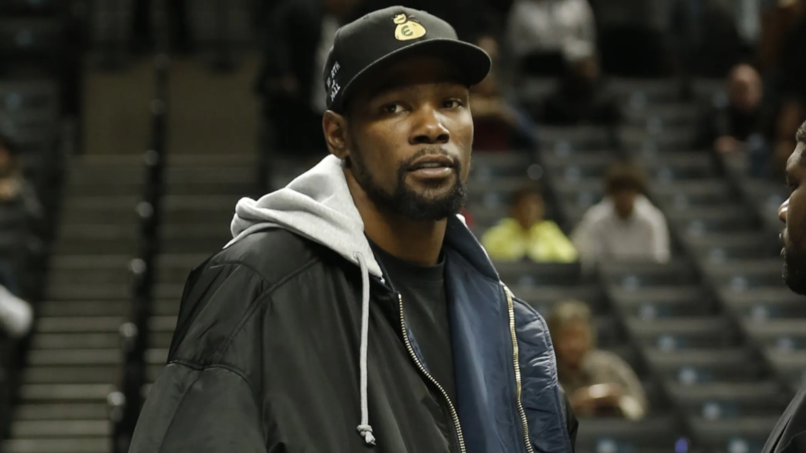

NBA Legend
NBA Legend |
Jerry West:The people on the NBA logo are a player dribbling between a red and blue background he is one of Lakers legend “Jerry West.” Alan Siegel is the man who designed the logo. The logo was created in 1969 by a designer and high school basketball star named Alan Siegel. |
|  | One of the legendary players in the NBA is Michael Jordan. His career point per game is 30.1. He was one of the best scorers in NBA history. He has been in Chigaco Bull and Washington Wizard team when he was in his NBA career. Michael Jordan has 30.1 points per game, which is higher than one of the greatest players in the NBA “wilt chamberlain.” The highest point that Michael Jordan get in a game is 69 point. Michael Jordan is already retired from the NBA. The position that Michael Jordan plays is small forward and shooting guard. |
|  | The second-best player is LeBron James. His career point per game is 27.5. His every game average is 27.2 points. For NBA this is very high. The highest point that LeBron gets is 61 that was very close to the best player “Micheal Jordan.” LeBron James hasn’t retired from the NBA. He had been a stay at Miami Heat, Cleveland Cavaliers, and Los Angeles Lakers. Now he is staying in Lakers. The position for Lebron James is Foward. |
|  | The third-best player is Kareem Abdul-Jabbar. His career has a total of 38,387 points. He averaged 24.6 points for his career. The highest record of the point that he gets is 55 points. He has been in Milwaukee Bucks and Los Angeles Lakers. Kareem Abdul-Jabbar has already retired from the NBA. The position that he plays is Center |
| NEWS | ||
|  Kevin Durant rules out return to lineup this season |